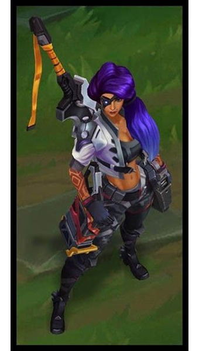

리그 오브 레전드의 151번째 챔피언

능력치
쓰레쉬와 라칸, 케일, 리메이크 피들스틱, 사일러스에 이은 공격 사거리마다 평타 모션이 바뀌는 챔피언. 원거리에서는 총을 쏘고, 근거리에서는 칼로 벤다. 보이는 것과는 다르게 모든 평타의 판정은 원거리로, 칼이든 총이든 정복자는 무조건 1스택씩 쌓이며, 칼로 적을 때려도 루난 투사체가 나간다. 칼을 쓰는 공격은 어드밴티지가 있는 편이지만 챔피언 자체의 판정은 원거리 공격이 전부라고 보면 된다.
뒤로가기